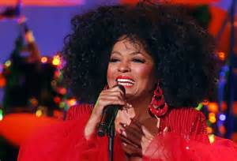

Sie startete ihre Karriere mit den Supremes, verkaufte weltweite 100 Millionen Platten, landete 28 Nummer-1-Hits und erhielt eine Oscar-Nominierung: Diana Ross. Als erste afroamerikanische Pop-Diva ist sie Vorbild und Inspiration für andere Musikerinnen. Nun wird die erfolgreiche Sängerin 70 Jahre alt.
Von Oliver Stangl

Im vergangenen Jahr tourte Diana Ross durch die USA und Südamerika und sang vor ausverkauften Häusern. (picture alliance / dpa – Felipe Trueba)
"From Hitsville U.S.A., the home of the world famous 'Detroit Sound', we invite you to meet Motown Records' Golden Girls. The undisputed queens of popular music - The Supremes."
Die unangefochtenen Königinnen der Pop-Musik. So wurden die Supremes 1965 angekündigt. Und das mit recht.